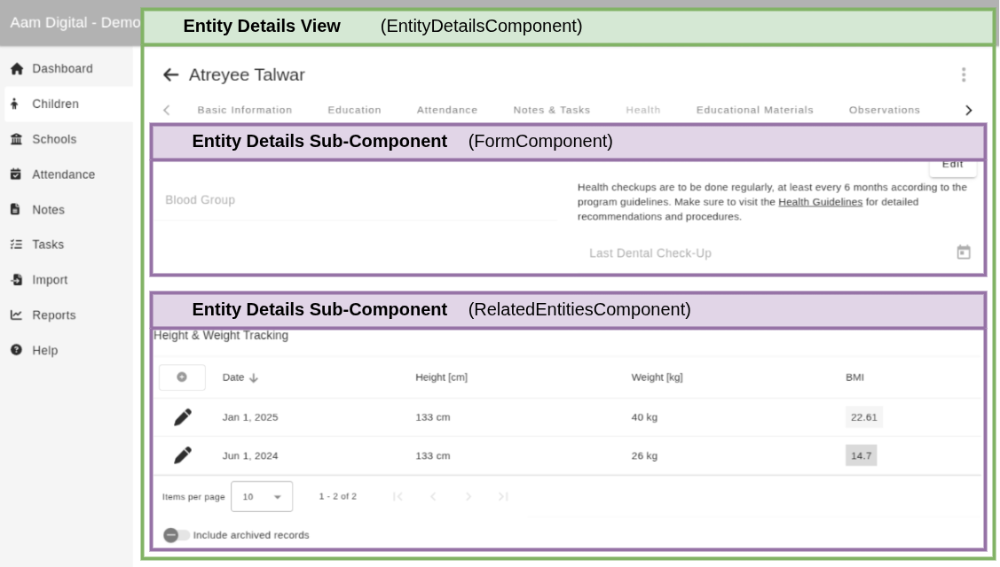

Aam Digital as a platform takes care of loading the relevant entity and configs for an "Entity Details View",
which displays the information about a single entity (e.g. one specific student).
The EntityDetailsComponent handles this initialization from the route.
To display some details in a customized way, you can create "panel components" that receive a reference to the current entity and their config parameters as @Input() automatically.
 The tabs (in the config called "panels") within the Entity Details view can display one or more "panel components", as shown above.
To make these components as re-usable and simple as possible, we do not load config from the route here.
Instead, the components are initialized from config by the DynamicComponentDirective.
This automatically sets @Input() properties to the value with the same name in the config object.
Those background details aside, what that means for your implementation is:
@Input() entity: Entity;. This will always contain the entity object, whose Details View is currently being displayed. You should not load this yourself from the database.@Input() showDescription: boolean;, which you can use in your template or code to adapt the component.)
These values are automatically set to whatever value is specified in the config object for your component at runtime in the database.An example config for the above:
Example :{
"component": "MySubView",
"config": {
"showDescription": true
}
}